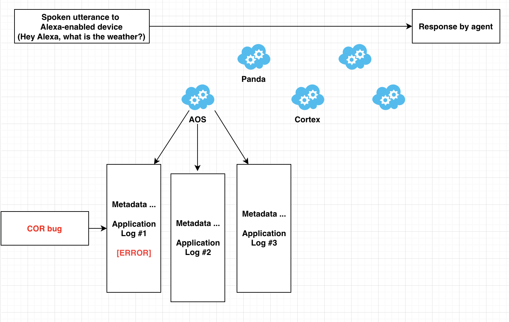
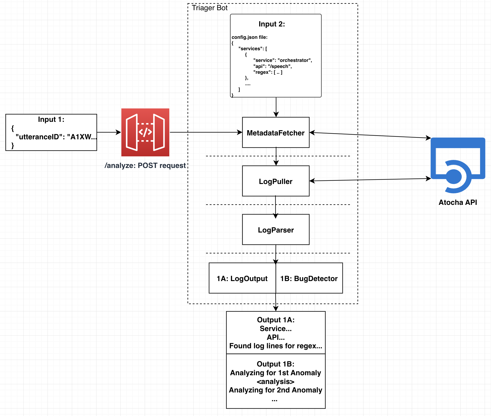

Multi-Agent Triager Bot
Amazon Alexa (Summer '23)
Background
The entire E2E process starting from a spoken utterance towards any Alexa enabled device to a response at the end is composed of many services, each with their own specific function. Just to name a few, the orchestrator service, the Panda service, DR, etc. Each service has a number of application logs associated with them.
Each application log recorded by Atocha corresponds to all of the server side requests and responses associated with that service. These logs and any metadata, information that uniquely identifies the logs and services, are stored in Atocha. Whenever a bug affects a service or service(s), it will typically show up in the logs on Atocha.
Problem
Developers working on Alexa are losing productivity due to manually sifting through what could be hundreds of log lines in Atocha to find the root causes of a bug impacting the Alexa service. It can take a developer 45 minutes on average in order to fully investigate a bug and route it to the proper teams for resolution. 10 bugs would account for a whole day of 1 SDE’s time.
Solution
Triager Bot is an internal tool running on an AWS Lambda fronted by API Gateway that will automatically fetch application metadata and log data associated with any particular Alexa request from the Atocha API, parse the log data for important log lines using regex matching, and analyze the log lines across multiple services for common bugs that may be encountered in any E2E flow. This information will all be displayed in a nicely formatted output in the CLI. Developers can then use the output to inform the proper teams most knowledgeable about the bug for quick resolution.
- This tool will be used by developers. This tool relies heavily on the Atocha API as a dependency.
- This service is configurable; in a JSON file, developers can specify what services metadata/logs to fetch, which log lines they want to see in the output, and which bugs that the service will look for in the E2E flow.
- The service has built-in extensibility; developers can onboard new bug types for the service to analyze for and new services to fetch and output.
Impact (So What?)
While there are existing tools that can help the developer more easily search for important information in log lines, the Triager Bot eliminates that manual search process and provides all the information the developer wants within seconds.
Triager Bot can reduce the length of a developer’s debug cycle for bugs impacting the Alexa service from 45 minutes/bug to 1 minute/bug, saving time and therefore cost.
Low Level Design Overview
Input
- config.json file
- UtteranceID
This is where the user can specify what services and their logs for the Triager Bot to fetch, and what regular expressions for the Triager Bot to search for in each service’s logs.
A unique ID generated for every utterance spoken to an Alexa-enabled device. This input is necessary for Triager Bot to identify the exact E2E flow associated any given request to an Alexa-enabled device.
Dataflow
- Send a POST request to /analyze endpoint containing the utteranceID
- The endpoint will then construct a Lambda, and call the Lambda’s `handleRequest` function on the utteranceID
- The inputs are passed into the MetadataFetcher, which will fetch all service metadata for services specified in the config file that are uniquely identified by the given utteranceID
- Calls Atocha API’s basicSearch on the utteranceID, which will return a JSON file of service metadata
- Calls Atocha API’s advancedSearch to target special logs that cannot be fetched by utteranceID
- Calls Atocha API’s logFetch on each service’s metadata, which will return a JSON file containing the full logs
- Calls Atocha API’s basicSearch on the utteranceID, which will return a JSON file of service metadata
- The full logs are passed into LogParser, which will look for log lines that contain the specified regular expressions in the config file
- Each service’s metadata from MetadataFetcher and the matched log lines will be output in a String in LogOutput
- Along with LogOutput, BugDetector will analyze fetched applications logs and regex-matched log lines for bugs that may have occurred in the entire E2E flow and produce a String for each bug type that has been analyzed for
The BugDetector.java class will iterate through all the Bug classes, call the analyzeLogs() method, which will return a String output, and then concatenate all the Strings together into one Bug output.
Output
The output will be a well-formatted String displayed in CLI that will first display the specified regex and any associated log lines followed by information about any common bugs that have been found.
Application
Technology Stack
For this application, I used Java for the backend and TypeScript for configuring AWS settings.
Demo
Unfortunately, the demo contains confidential information.